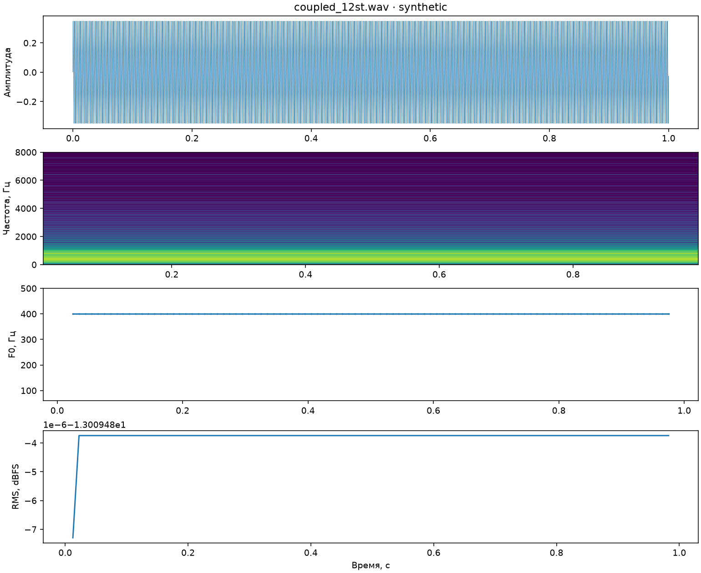

ТЕХНИЧЕСКИЙ СИНТЕТИЧЕСКИЙ СИГНАЛ. Не результат опыта с голосом.

{
"duration": 1.0,
"peak": 0.348419189453125,
"rms": 0.22362780628958762,
"f0_median_hz": 399.9967607692501,
"warnings": []
}RMS dBFS не является калиброванной громкостью в dB SPL. Неголосовые участки F0 оставлены пустыми. Ошибки октавы и выделения тона проверяются в Praat.